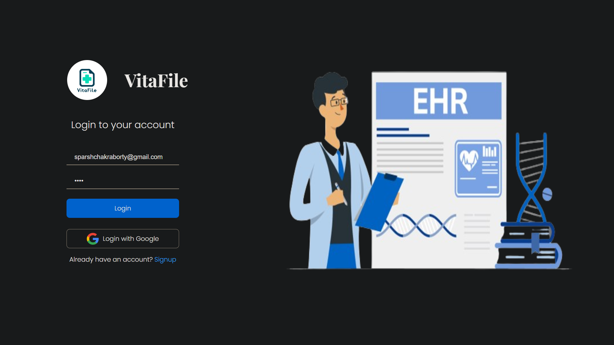

03. Some Things I've Built

Featured Project
MRIG - Medical Report Generation
- Developed MRIG using ResNet50 CNN architecture, enhancing it with additional neural network components for detailed chest X-ray analysis and interpretation.
- Engineered an algorithm to extract 13 critical parameters from chest X-ray scans, translating image features into actionable medical insights for healthcare diagnostics.
- Python
- ResNet50
- CNN

Featured Project
VitaFile
- Led the frontend development of VitaFile, utilizing Google's APIs to centralize electronic health record (EHR) access, ensuring seamless integration and efficient data management.
- Introduced advanced features such as multilingual support, voice interaction, and gesture recognition, significantly enhancing the user experience and accessibility of VitaFile.
- React
- Google APIs
- JavaScript

Featured Project
PhytoFinder - Medicinal Plant ID using CNN
- Developed PhytoFinder, a robust CNN for precise medicinal plant identification, using deep learning and transfer learning with pre-trained models for optimized performance.
- Trained the CNN on diverse plant datasets, enabling advanced feature extraction and creating a versatile tool essential for pharmacology and conservation.
- Python
- TensorFlow
- CNN